`summarise()` has regrouped the output.
ℹ Summaries were computed grouped by Design and Type.
ℹ Output is grouped by Design.
ℹ Use `summarise(.groups = "drop_last")` to silence this message.
ℹ Use `summarise(.by = c(Design, Type))` for per-operation grouping
(`?dplyr::dplyr_by`) instead.
# A tibble: 2 × 8
Type Bobsled Flying Inverted `Sit Down` `Stand Up` Suspended Wing
<fct> <int> <int> <int> <int> <int> <int> <int>
1 Steel 3 9 42 456 4 7 9
2 Wood 1 NA NA 104 NA NA NA
Now we’ll create some bar charts using ggplot()
#stacked bar chartggplot(data = rcs |>drop_na(Design, Census.Region), aes(x = Census.Region, fill = Design)) +geom_bar(position ="stack") +# set position to stack for stacked bar plotlabs(title ='Count of Roller Coaster Designs in Different Regions',x ='Census Region',y ='Count') +theme_minimal()
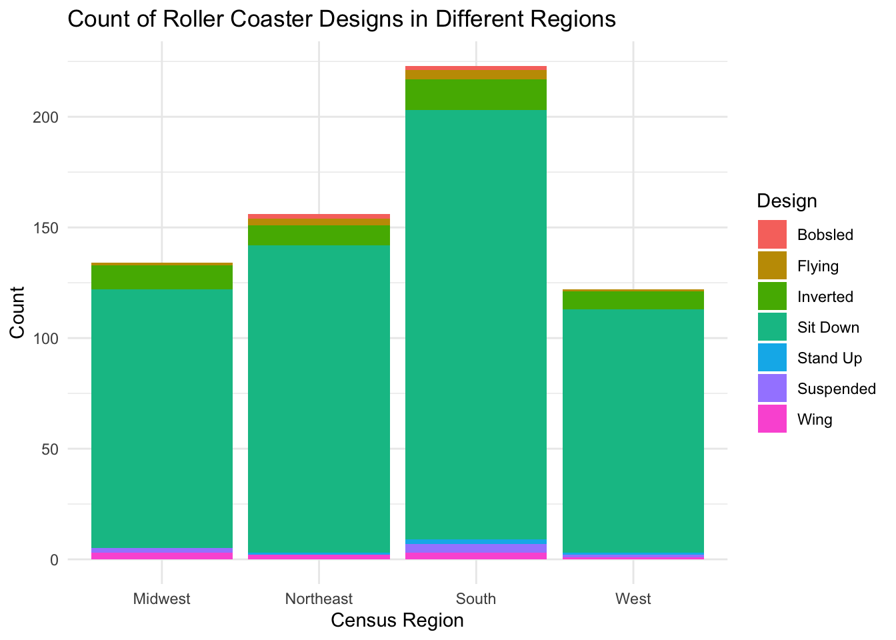
#side-by-side bar chartggplot(data = rcs |>drop_na(Design, Census.Region), aes(x = Census.Region, fill = Design)) +geom_bar(position ="dodge") +# set position to dodge for side-by-side plotlabs(title ='Count of Roller Coaster Designs in Different Regions',x ='Census Region',y ='Count') +theme_minimal()
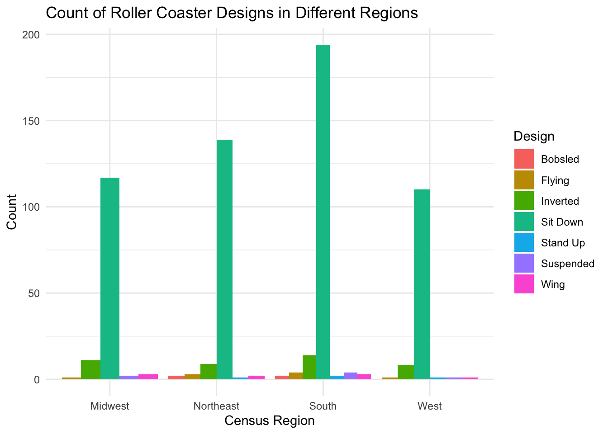
Seems like sit-down roller coasters are by far the most popular
Numeric variables (and across groups)
Lets take a closer look at two of our numeric variables. I’ll choose TopSpeed and MaxHeight.
First we’ll examine the center and spread of these variables
mean(rcs$TopSpeed, na.rm =TRUE) # make sure to remove the NA values
[1] 42.24456
sd(rcs$TopSpeed, na.rm =TRUE)
[1] 19.37051
mean(rcs$MaxHeight, na.rm =TRUE)
[1] 76.80399
sd(rcs$MaxHeight, na.rm =TRUE)
[1] 61.51137
Now subset the data to include only inverted Design types. Then find their mean and median again
Seems like the inverted roller coasters have a higher mean TopSpeed and MaxHeight
Lets find measures of center and spread across a single grouping variable for two of these variables
grouped1_rcs <- rcs |>select(Type, TopSpeed, MaxHeight) |>group_by(Type) |># group by one variabledrop_na() |>summarize(across(everything(), # find the mean and sd across all variableslist(mean = mean, sd = sd)))grouped1_rcs
Seems like wooden roller coasters have a higher TopSpeed on average compared to steel roller coasters. Their average MaxHeight is very similar, although the wooden coaster’s MaxHeight is much less variable then the steel coaster’s MaxHeight.
Now lets find measures of center and spread across two grouping variables for two of these variables/
grouped2_rcs <- rcs |>select(Type, Design, TopSpeed, MaxHeight) |>group_by(Type, Design) |># group by two variablesdrop_na() |>summarize(across(everything(), list(mean = mean, sd = sd)))
`summarise()` has regrouped the output.
ℹ Summaries were computed grouped by Type and Design.
ℹ Output is grouped by Type.
ℹ Use `summarise(.groups = "drop_last")` to silence this message.
ℹ Use `summarise(.by = c(Type, Design))` for per-operation grouping
(`?dplyr::dplyr_by`) instead.
grouped2_rcs
# A tibble: 9 × 6
# Groups: Type [2]
Type Design TopSpeed_mean TopSpeed_sd MaxHeight_mean MaxHeight_sd
<fct> <fct> <dbl> <dbl> <dbl> <dbl>
1 Steel Bobsled 34 1.73 64.3 4.51
2 Steel Flying 47.0 12.7 106. 38.2
3 Steel Inverted 52.2 12.4 121. 44.2
4 Steel Sit Down 39.1 21.4 78.5 68.4
5 Steel Stand Up 58 7.16 127. 33.4
6 Steel Suspended 42.7 9.71 69.2 13.0
7 Steel Wing 46.2 12.5 138. 31.9
8 Wood Bobsled 24 NA 50 NA
9 Wood Sit Down 49.6 10.4 84.6 30.8
The steel type, wing design roller coasters seem like they’re pretty scary.
Now lets create a correlation matrix between all the numeric variables.
rcs_numeric <- rcs |>select(where(is.numeric)) |># select only the numeric variables from the rcs datasetdrop_na() # drop missing valuescor(rcs_numeric)
`stat_bin()` using `bins = 30`. Pick better value `binwidth`.
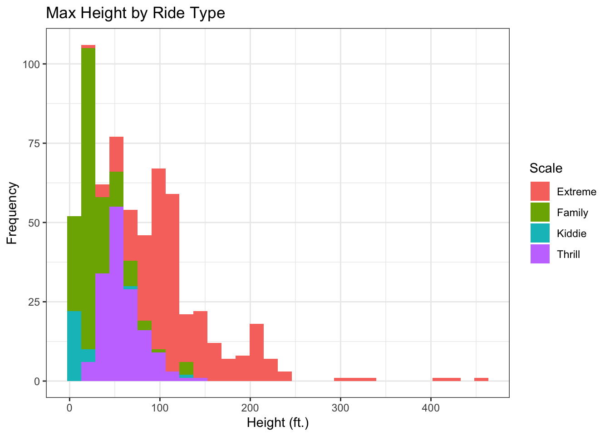
As expected, TopSpeed and MaxHeight seem to increase along with Scale. Kiddie and family rides have lower TopSpeed and MaxHeight
# Boxplotsggplot(rcs |>select(Scale, TopSpeed) |>drop_na(), aes(x = TopSpeed, fill = Scale)) +geom_boxplot() +labs(title ="Distribution of Top Speed by Scale of Ride",x ="Top Speed (MpH)",y ="Frequency") +theme_bw()
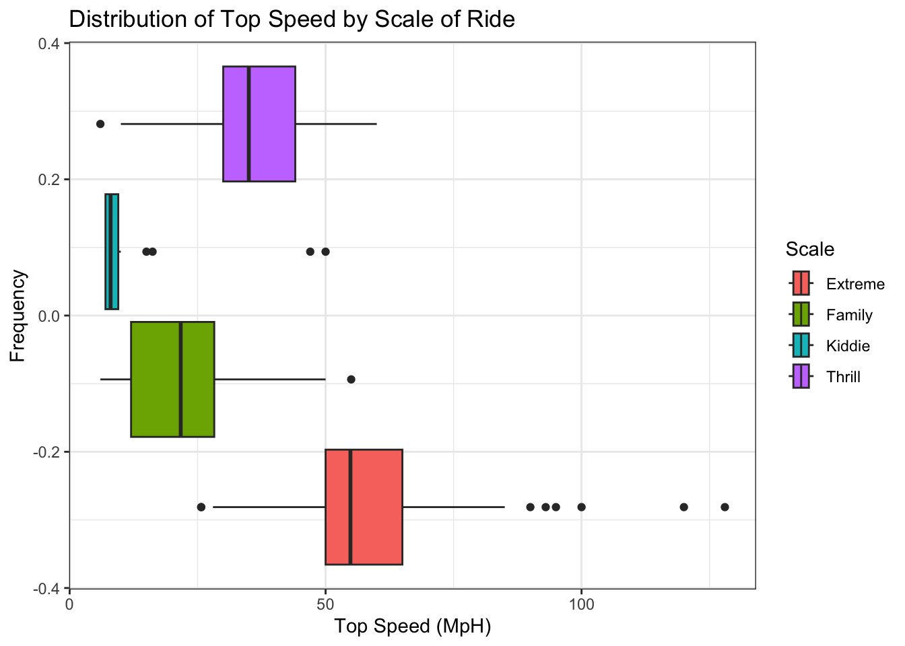
ggplot(rcs |>select(Scale, MaxHeight) |>drop_na(), aes(x = MaxHeight, fill = Scale)) +geom_boxplot() +labs(title ="Distribution of Max Height by Scale of Ride",x ="Height (ft.)",y ="Frequency") +theme_bw()
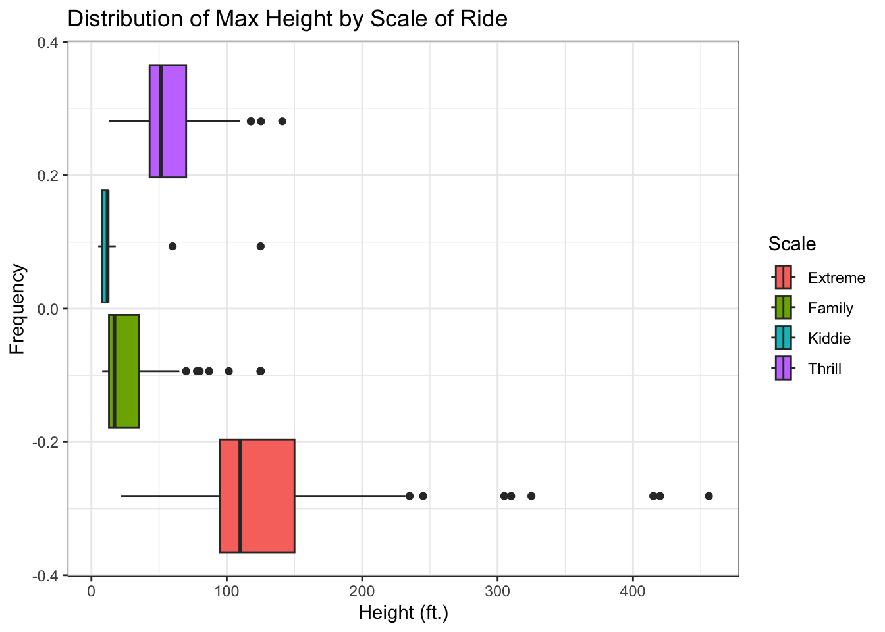
As expected, thrill and extreme rides have a higher TopSpeed and Maxheight on average, with kiddie and family rides having lower TopSpeed and Maxheight. Another thing I noticed is how little overlap there is in the spread of each Scale level. The middle 50% of the data within each Scale level almost never overlap for both TopSpeed and Maxheight.
# Kernel Density Plotggplot(rcs |>select(Scale, TopSpeed) |>drop_na(), aes(x = TopSpeed, fill = Scale)) +geom_density(alpha =0.5) +labs(title ="Distribution of Top Speed by Scale of Ride",x ="Top Speed (MpH)",y ="Frequency") +theme_bw()
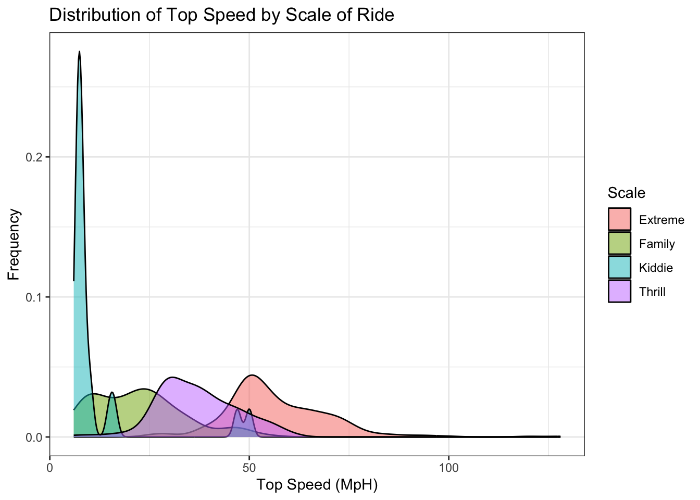
ggplot(rcs |>select(Scale, MaxHeight) |>drop_na(), aes(x = MaxHeight, fill = Scale)) +geom_density(alpha =0.5) +labs(title ="Distribution of Max Height by Scale of Ride",x ="Height (ft.)",y ="Frequency") +theme_bw()
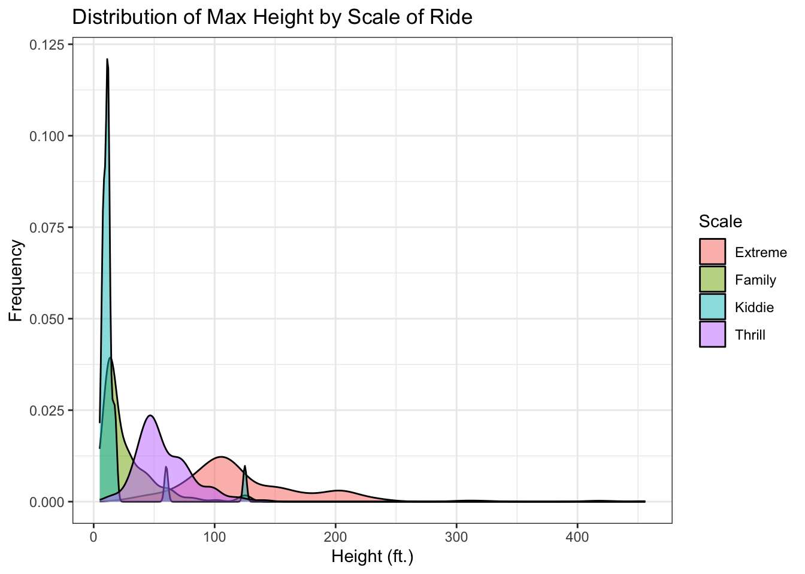
The density plots show a clear increase in TopSpeed and MaxHeight as ride Scale increases. Extreme rides have the highest speeds and heights with the widest distribution, while kiddie rides have the lowest speeds and heights with the smallest distribution. Extreme rides also exhibit a long right tail, indicating a few exceptionally fast coasters.
# Scatter Plotsggplot(rcs |>select(TopSpeed, MaxHeight, Scale) |>drop_na(), aes(x = MaxHeight, y = TopSpeed, color = Scale)) +geom_point() +labs(title ="Correlation between Top Speed and Max Height",x ="Max Height (ft.)",y ="Top Speed (MpH)") +theme_bw()
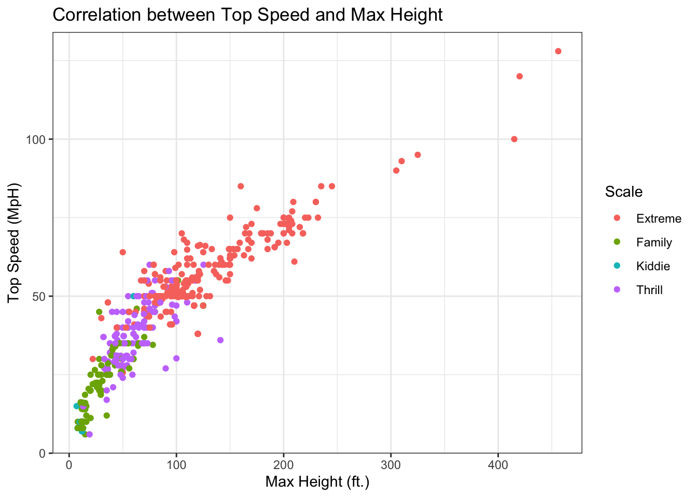
This scatter plot tells us that MaxHeight increases along with TopSpeed with a noticably high correlation. We can also see that as MaxHeight and TopSpeed increase, ride Scale tends to increase as well. The frequency of extreme rides increase as MaxHeight and TopSpeed increase, while the frequency of kiddie and family rides decrease.
ggplot(rcs |>select(Drop, Length, Type) |>drop_na(), aes(x = Drop, y = Length, color = Type)) +geom_point() +labs(title ="Correlation between Top Speed and Max Height",x ="Max Height (ft.)",y ="Top Speed (MpH)") +theme_bw()
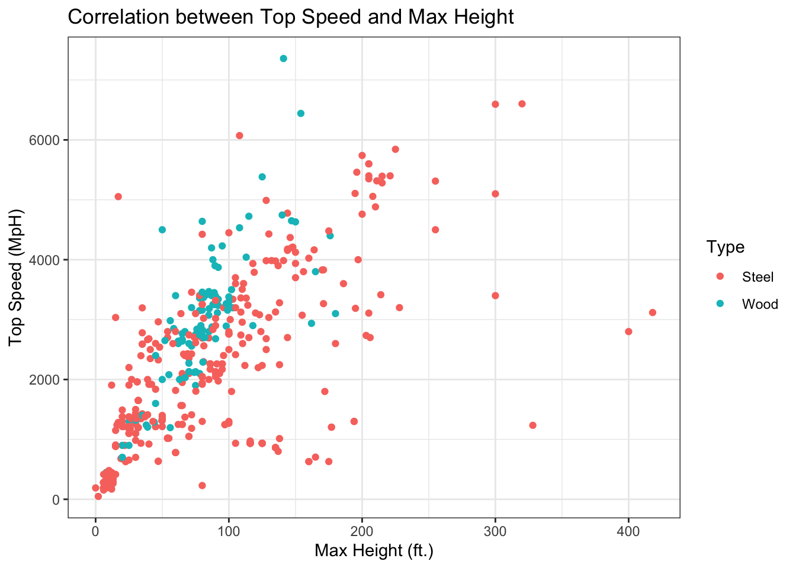
The correlation between Drop and Length does not seem as strong. We can see that steel roller coasters are a bit more variable in Drop, but apart from that, there is not much this graph is telling us.
# Faceting the scatter plots with one categorical variableggplot(rcs |>select(TopSpeed, MaxHeight, Scale) |>drop_na(), aes(x = MaxHeight, y = TopSpeed)) +geom_point() +labs(title ="Top Speed by Max Height",x ="Max Height (Feet)",y ="Top Speed (MPH)") +facet_wrap(~Scale, nrow =2) +theme_bw()
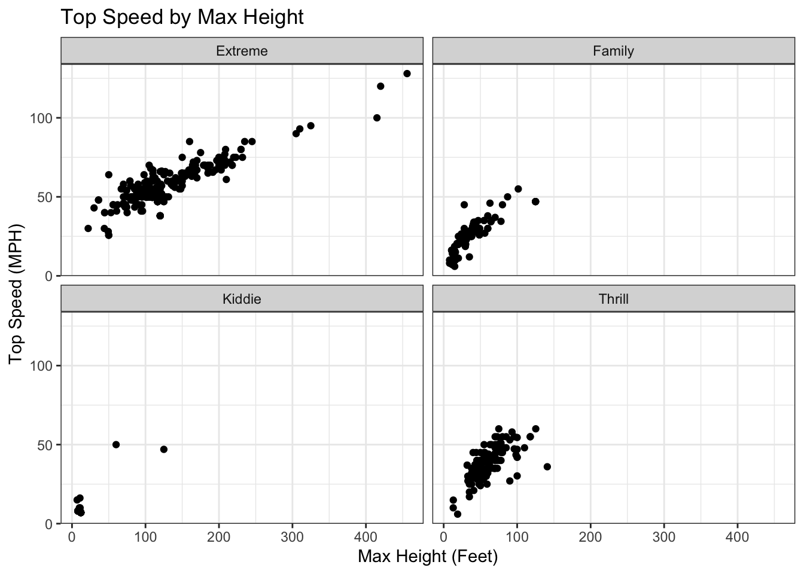
ggplot(rcs |>select(Drop, Length, Type) |>drop_na(), aes(x = Drop, y = Length)) +geom_point() +labs(title ="Correlation between Top Speed and Max Height",x ="Max Height (ft.)",y ="Top Speed (MpH)") +facet_wrap(~Type, nrow =2) +theme_bw()
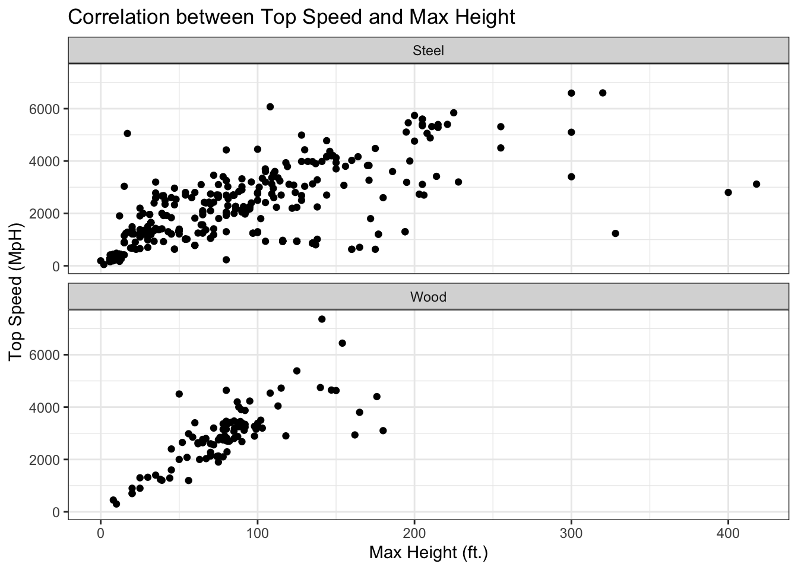
# Faceting the scatter plots with two categorical variablesggplot(rcs |>select(TopSpeed, MaxHeight, Scale, Type) |>drop_na(), aes(x = MaxHeight, y = TopSpeed)) +geom_point() +labs(title ="Top Speed by Max Height",x ="Max Height (Feet)",y ="Top Speed (MPH)") +facet_wrap(vars(Type,Scale)) +theme_bw()
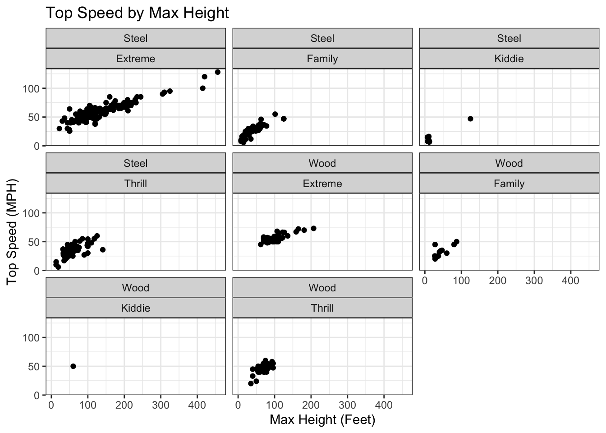
ggplot(rcs |>select(Drop, Length, Type, Scale) |>drop_na(), aes(x = Drop, y = Length)) +geom_point() +labs(title ="Correlation between Top Speed and Max Height",x ="Max Height (ft.)",y ="Top Speed (MpH)") +facet_wrap(vars(Type,Scale)) +theme_bw()